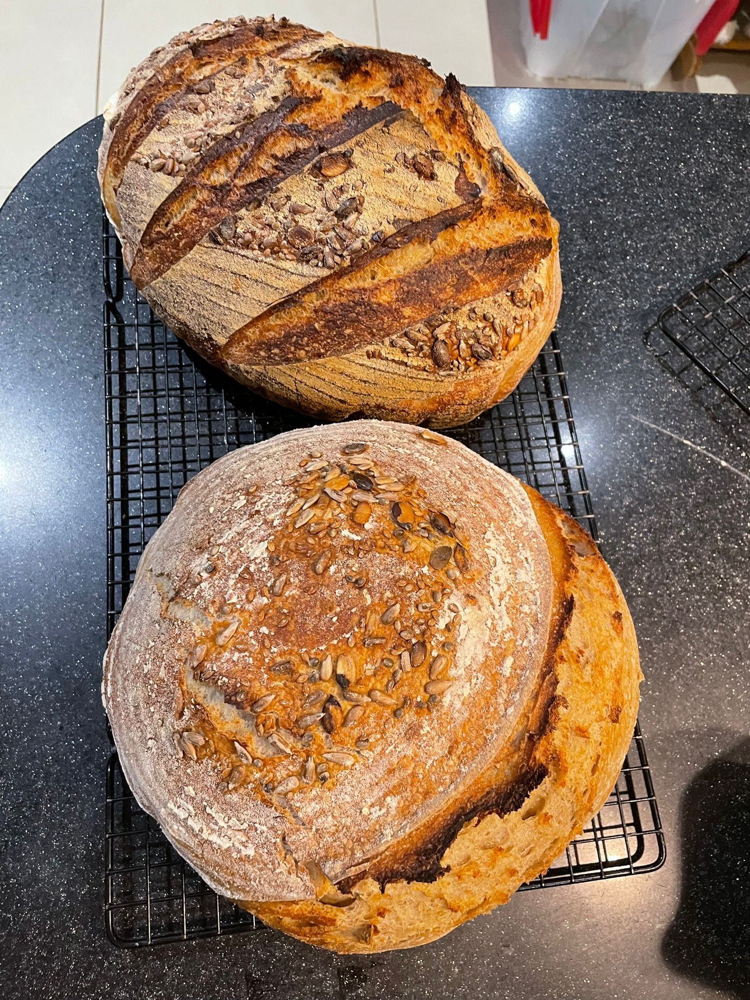
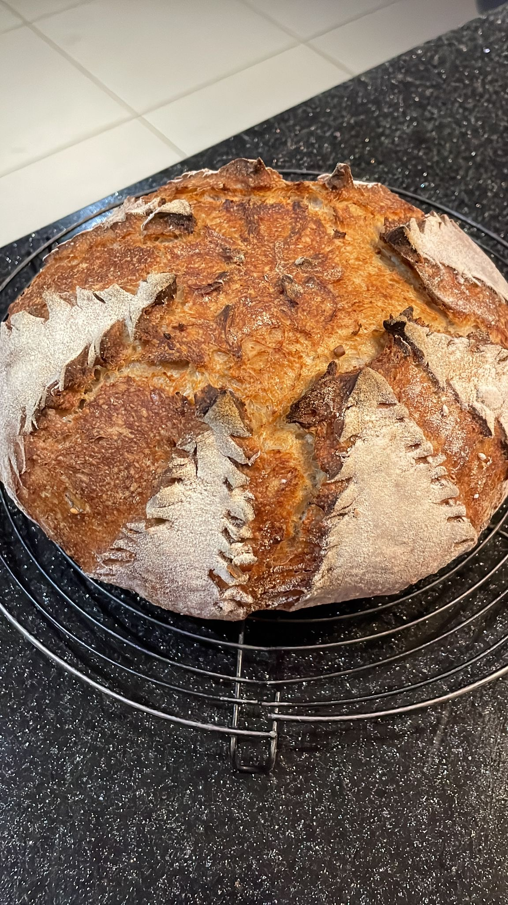
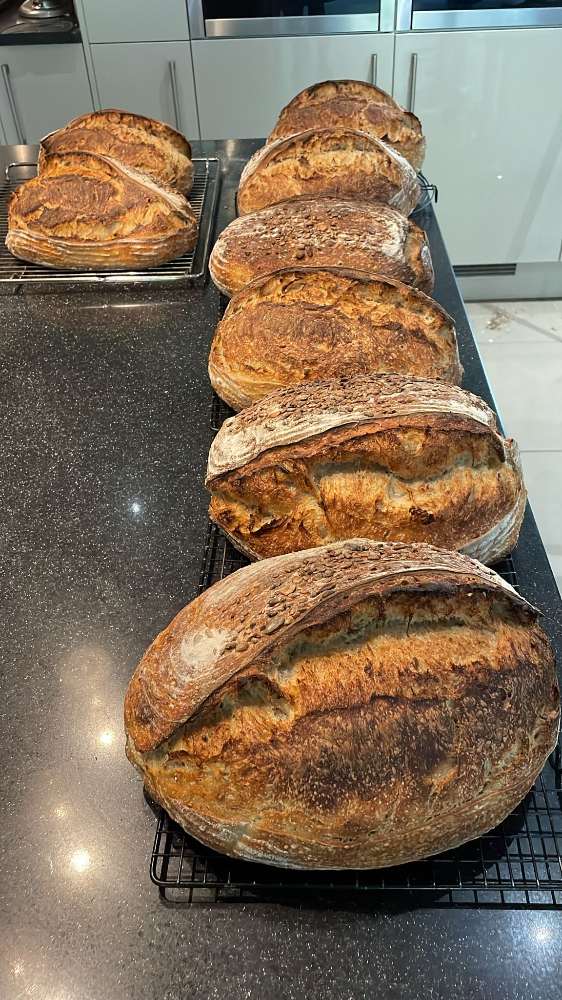

Fresh loaves
Weekly sourdough
Small-batch bakes for local collection, with a focus on flavour, texture, and consistency.
Reigate sourdough studio
Handmade sourdough, simple classes, and slow baking for local tables. One loaf at a time, made to feel generous and real.

This week's bake
Crackling crust, open crumb, and a long slow ferment for depth, character, and a loaf worth sharing.
Jude's loaves
These breads carry the personality of the bake: deep colour, bold ears, flour-dusted crusts, and the quiet confidence of something made by hand and made often.


Bread should not feel factory-made. It should feel remembered, shared, and unmistakably from someone's kitchen.
A slower rhythm
Bread should not be rushed, over-designed, or made to feel generic. Every loaf here is shaped by hand, fermented slowly, and baked with a quiet kind of care.

Fresh loaves
Small-batch bakes for local collection, with a focus on flavour, texture, and consistency.
Learn at home
Calm, hands-on sourdough sessions for beginners and home bakers who want a more confident routine.
Stay close
Join the list for bread drops, class dates, and the occasional note from the kitchen.
From loaf to landscape
From flour-dusted mornings to nearby green spaces, the whole project is rooted in local pace, local people, and simple pleasures.

Reigate mornings
The bread belongs to a slower kind of day: neighbourly pickups, warm kitchens, and tables that fill up naturally.
About Jude
What began during Covid as a steady personal practice grew into a way of feeding neighbours, teaching others, and making something honest enough to gather around.
Jude now bakes dozens of loaves each week and teaches others the craft with the same intention: make something real, do it carefully, and share it generously.
Weekly bread drops
Be first to hear about fresh loaves, upcoming classes, and what is coming out of the oven next.